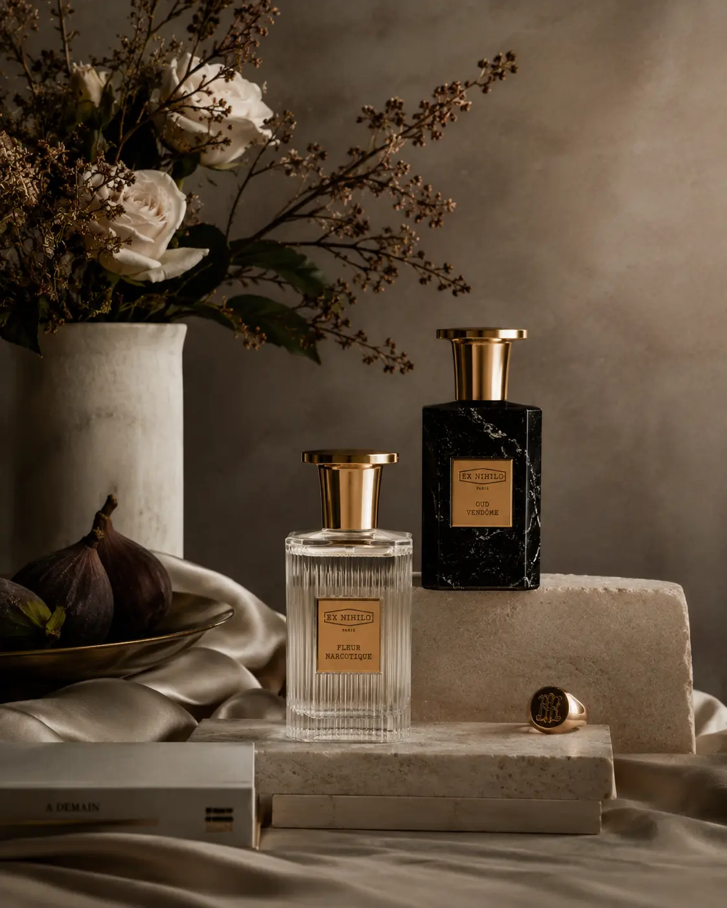
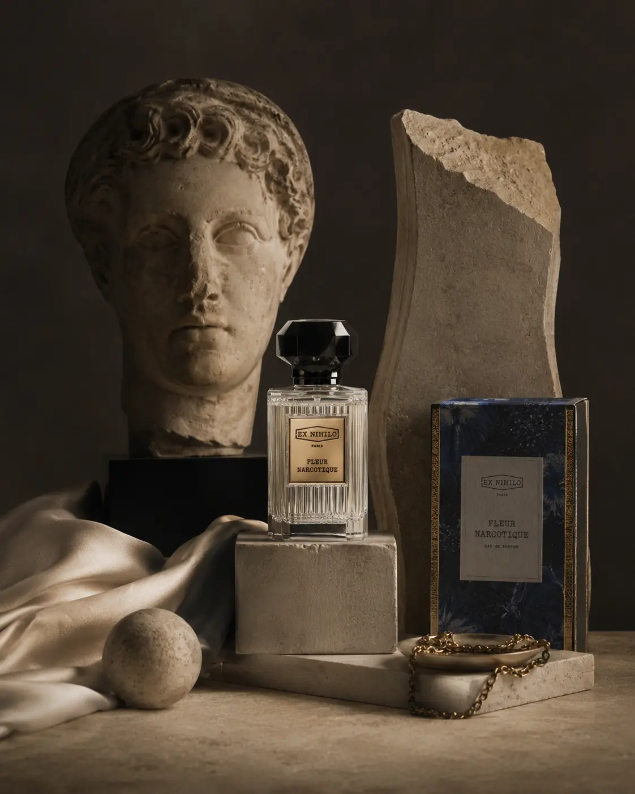

Staging Fine-Art Editorial Still Lifes for Premium Luxury Lookbooks
The Fine-Art Shift: Product Photography as Fine Art
In luxury commerce, products are more than functional items; they are expressions of design, heritage, and identity. Standard catalog shots, while useful for showing details, often fail to communicate the story and prestige of a luxury brand. To stand out, premium brands are presenting their collections as fine art.
This has led to the adoption of editorial still life staging. By combining product presentation with art composition, brands can create evocative visual stories. Through high-end **Editorial Still Life Photography** and **Fine-Art Luxury Product Framing**, companies can elevate their digital lookbooks.
Through disciplined prop staging, directional lighting, and creative composition, you can build a lookbook that reflects the value of your brand.
The Materials of Atmosphere: Sourcing and Selecting Props
Creating a premium environment requires careful selection of staging materials. Props must support—not distract from—the product's form, textures, and color. By using materials with contrasting surfaces, photographers can highlight product quality.
Raw materials like concrete blocks, slate slabs, sand, water, or raw marble slabs provide a tactile contrast to polished metals, goldwork, and perfumes. The roughness of the stone emphasizes the smooth, reflective finish of the luxury product, directing attention to the item.
Additionally, the color palette of props should remain neutral. Soft beige, warm greys, sand tones, and deep blacks ensure the product's color stands out, maintaining visual balance across your lookbook layout.
Staging and Composition: The Rules of Fine-Art Framing
Creating a high-end still life image requires careful arrangement of props, angles, and textures.
- Designing high-concept accessory photography. In **High-concept accessory photography**, the goal is to create a visual dialogue between the product and its environment. Arrange elements to highlight material geometry and details.
- Mastering creative product prop staging rules. Follow strict **creative product prop staging rules**. Select natural props like marble slabs, raw stones, textured wood, or water surfaces that contrast with the product's polished finish.
- Using natural hard shadow directional light. Create depth using **natural hard shadow directional light**. A single focused point light source mimics the sun, casting long, sharp shadows that add dimension to your composition.
- Capturing museum-grade luxury product shots. Focus on high resolution and sharpness to produce **museum-grade luxury product shots**. Use focus-stacking to ensure the product is clear from front to back.
Communicate Brand Prestige
Fine-art composition presents accessories as collectibles, communicating brand quality and justifying premium pricing.
Create Visual Depth
Using single-source directional lighting casts sharp shadows, creating high-contrast frames that draw user attention.
Maintain Product Focus
Strict prop staging rules ensure background materials support the product's color and texture story without causing distraction.
Elevate Storefront Layouts
An artistic catalog presentation elevates your website layout, converting your e-commerce storefront into a premium gallery space.

The Light Source: Configuring Natural Hard Shadows
Lighting is the most critical element to establish mood in still life photography. While catalog photos use large softboxes for flat, even light, editorial still lifes use focused point sources to create high-contrast directional shadows.
By placing a single LED projector or spot strobe at a side angle, you create long shadows that add shape and depth to your props and product. Grids and snoots are used to focus the beam, preventing light spill and maintaining dark areas.
The geometric shadow shapes serve as visual lines, guiding the viewer's eye to the product. This interplay of light and dark creates a sophisticated, gallery-like atmosphere in your lookbook catalog.
The Styling Rules: Material, Contrast, and Geometry
A luxury composition should use materials and layout structures to highlight the product's quality.
- Selecting contrasting textures. Pair polished jewelry or fine leather with raw, textured props like concrete, rough stone, or slate. The texture contrast highlights the smooth finish of your product.
- Establishing geometric balance. Arrange props to follow geometric rules, such as diagonals or symmetry. Geometric layouts create a sense of order and design harmony that appeals to luxury buyers.
- Managing the color palette. Keep the color story simple. Use neutral backgrounds (warm greys, soft beige, or deep black) to ensure the product's natural color stands out.
- Creating a high-end artistic catalog presentation. Combine still life frames with clean model shots to design your **artistic catalog presentation**, creating a balanced narrative across your digital lookbook.
Still Life Production Checklist
Coordinate your editorial still life shoots using this technical preparation checklist.
Prop & Set Selection
- Choose raw, organic props: stone slabs, concrete blocks, textured linens, or clear water trays.
- Ensure all props are clean, free of dust, and match the brand's color palette.
- Keep prop sizes in scale with the main accessory product.
Lighting Setup
- Use a single, high-powered LED or strobe point light source.
- Attach a grid or snoot to focus the beam and prevent light spill.
- Position the light at a narrow side angle to cast long, sharp shadow lines.
Camera Settings
- Lock your camera on a heavy tripod to prevent micro-shakes.
- Set the aperture to its sweet spot (f/8 to f/11) to maintain sharpness.
- Use manual focus and focus-stacking for close-ups.
Integrating Still Life Assets into the Storefront
Place your still life photography across the user path to build premium appeal.
- Hero banners and header backgrounds. Use wide-angle still life compositions as landing page header images, establishing the collection's look and feel immediately.
- Collection grid headers. Place themed still life frames at the top of your collection pages, framing product listings with editorial context.
- Social-first catalog hooks. Share high-contrast still life shots on social channels to stop the scroll and drive traffic to your store.

Conclusion
Staging editorial still lifes is an effective way to communicate product value and elevate lookbooks. By replacing standard shots with **Editorial Still Life Photography** that treats products as art, brands can build premium appeal.
Through disciplined prop staging, directional hard lighting, and custom **Fine-Art Luxury Product Framing**, you can deliver lookbook images that convert.
At The PhD Ads in Madurai, we produce beautiful **museum-grade luxury product shots**, design still life compositions, and deliver **artistic catalog presentations** that help luxury brands grow.
Key Topics
Elevate Your Luxury Lookbook Staging
Ready to upgrade your brand lookbook with fine-art still life imagery? At The PhD Ads in Madurai, we design custom staging setups, use directional lighting, and deliver lookbook photos that represent genuine luxury.
Email: team@e2o.in